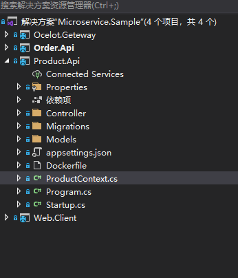
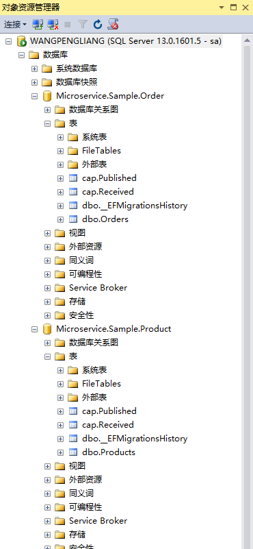
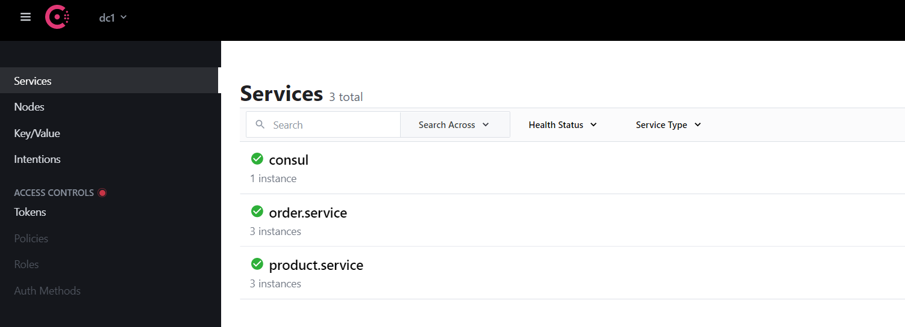
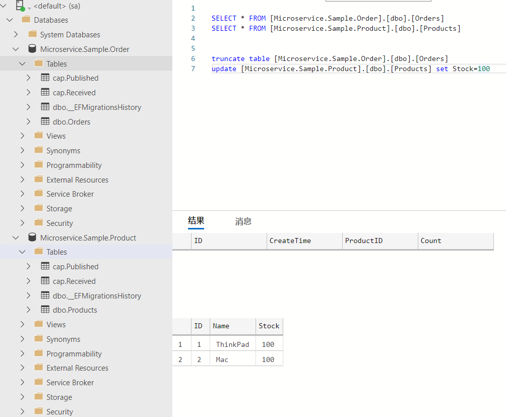
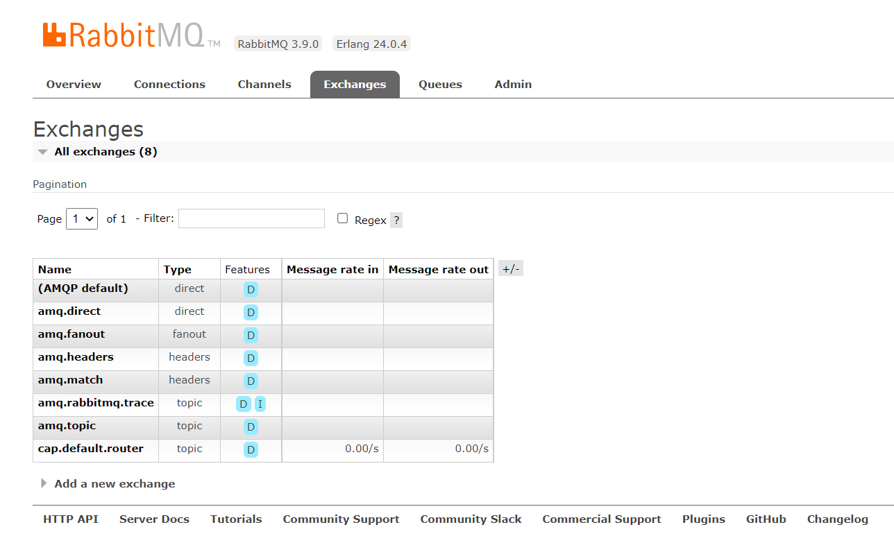
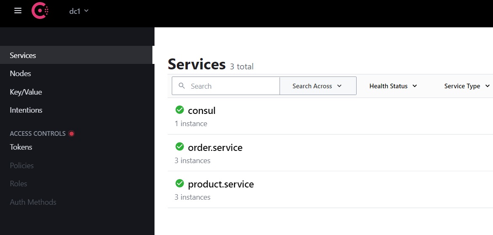
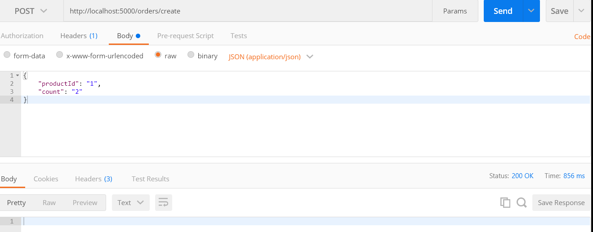
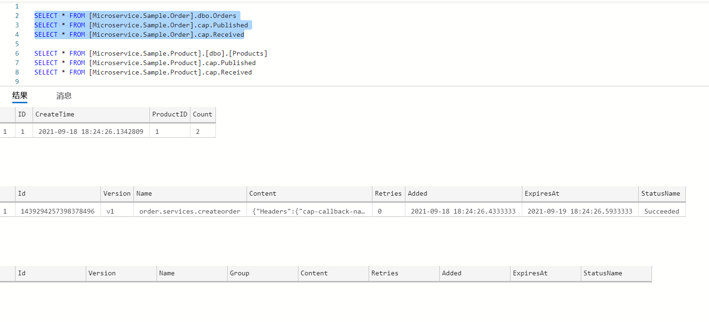
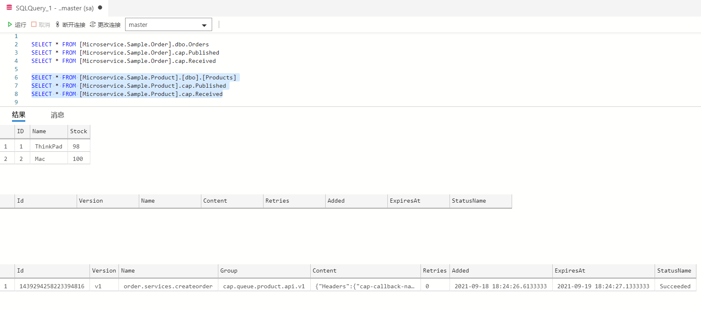

前言
上一篇中已经完成了 Ocelot + Consul 的搭建，这篇简单说一下事件总线（EventBus)。
事件总线
什么是事件总线？
事件总线是对观察者（发布-订阅）模式的一种实现。它是一种集中式事件处理机制，允许不同的组件之间进行彼此通信而又不需要相互依赖，达到解耦的目的
为什么要使用事件总线？
- 以当前项目举例，假设有一个订单服务，一个产品服务。客户端有一个下单功能，下单时调用订单服务的下单接口，下单接口需要调用产品服务的减库存接口，这涉及到服务与服务之间的调用。服务之间调用可以选择
RestAPI或者效率更高的gRPC。可能这两者各有各的使用场景，但是它们都存在服务之间的耦合问题，或者难以做到异步调用- 假设下单调用订单服务，订单服务需要调用产品服务，产品服务又要调用物流服务，物流服务再去调用xx服务等等，如果每个服务处理时间需要2s，不使用异步处理的话，响应时间可想而知。如果使用EventBus的话，那么订单服务只需要向EventBus发一个“下单事件”就可以了。产品服务会订阅“下单事件”，当产品服务收到下单事件时，自己去减库存。这样就避免了两个服务之间直接调用的耦合性，并且真正做到了异步调用
既然涉及到多个服务之间的异步调用，那么就不得不提分布式事务。分布式事务并不是微服务独有的问题，而是所有的分布式系统都会存在的问题。关于分布式事务，可以查一下 “CAP原则” 和 “BASE理论” 了解更多。如今分布式系统更多时候会追求事务的最终一致性。
下面使用开源框架 CAP来演示 EventBus 的基本使用。之所以使用 CAP 是因为它既能解决分布式系统的最终一致性，同时又是一个 EventBus，它具备EventBus 的所有功能。点击了解更多。
CAP
目前 CAP 支持使用 RabbitMQ ，Kafka，Azure Service Bus 等进行底层之间的消息发送，不需要具备这些消息队列的使用经验就可以轻松的集成到项目中。CAP 目前支持使用 Sql Server，MySql，PostgreSql，MongoDB 数据库的项目。这里选择：消息组件使用 RabbitMq，数据库存储使用 SqlServer。
Nuget 安装 :
1 | Microsoft.EntityFrameworkCore |
Product.Api
新增 Product.Api 作为产品服务，代码结构与 Order.Api 结构类似：

ProductsController.cs
增加减库存接口：
1 | using DotNetCore.CAP; |
CreateOrderMessageDto.cs
1 | namespace Product.Api.Models |
Product.cs
1 | using System.ComponentModel.DataAnnotations; |
ProductContext.cs
1 | using Microsoft.EntityFrameworkCore; |
appsettings.json
1 | { |
Startup.cs
1 | public void ConfigureServices(IServiceCollection services) |
Order.Api
OrdersController.cs
增加下单接口：
1 | using DotNetCore.CAP; |
CreateOrderMessageDto.cs
1 | namespace Order.Api.Models |
Order.cs
1 | using System; |
OrderContext.cs
1 | using Microsoft.EntityFrameworkCore; |
appsettings.json
1 | { |
Startup.cs
1 | public void ConfigureServices(IServiceCollection services) |

以上就是产品服务的新增以及订单服务的部分代码调整，功能很简单：各自添加自己的数据库表，订单服务增加下单接口，下单接口会发出“下单事件”。产品服务增加减库存接口，减库存接口会订阅“下单事件”。然后客户端调用下单接口下单时，产品服务会减去相应的库存。关于EF数据库迁移之类的基本使用不做介绍。
重新构建镜像
1 | [root@centos-01 dotnetcore_src]# cd order.api.release/ |
运行订单服务，产品服务：
1 | docker run -d --name order.api -p 80:80 order.api --ConsulSetting:ServicePort="80" |

ocelot.json 增加路由配置：
1 | { |
至此整个环境就有点复杂了。要确保 SqlServer，RabbitMQ，Consul，服务实例、Gateway都正常运行：



cap.published 表和 cap.received 表由 CAP 自动生成，内部使用本地消息表+MQ来实现异步确保。
测试
使用Postman作为客户端调用下单接口（5000是Ocelot网关端口）：

订单库：

产品库：

至此虽然功能很简单，但是实现了服务的解耦，异步调用，和最终一致性。要注意的是：
- 这里的事务是指：订单持久化到数据库/和下单事件保存到
cap.published表（保存到cap.published表理论上代表消息正常发送到MQ），要么一同成功，要么一同失败。如果这个事务成功，那么就可以认为这个业务流程是成功的 - 产品服务的减库存是否成功那是产品服务的事，理论上也应该是成功的。因为消息已经确保发到了MQ，产品服务必然会收到消息。CAP也提供了失败重试，和失败回调机制，要理解 “CAP 是基于MQ加本地消息表来实现异步确保”
- 如果下单成功但是库存不足导致减库存失败了怎么办，是否需要回滚订单表的数据？如果产生这种想法，说明还没有真正理解最终一致性的思想。首先下单前肯定会检查一下库存数量，既然允许下单那么必然是库存充足的。（高并发下保证不超卖是另一个问题这里不考虑）如果非要数据回滚也是能实现的，CAP的
ICapPublisher.Publish方法提供一个callbackName参数，当减库存时，可以触发这个回调。其本质也是通过发布订阅完成，但不推荐 - CAP无法保证消息不重复，实际使用中需要自己考虑一下实现消息的重复过滤和幂等